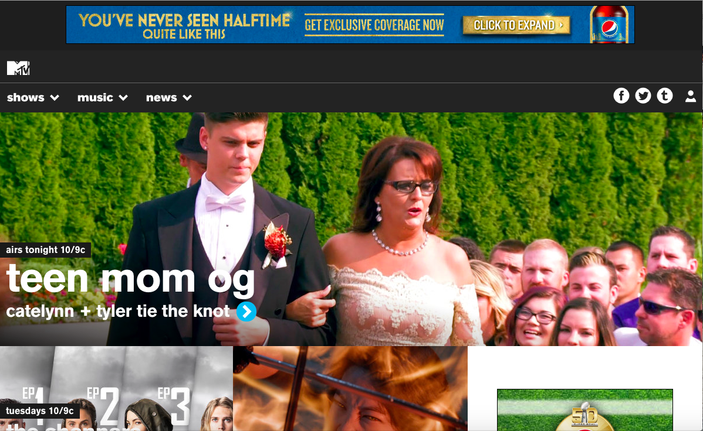
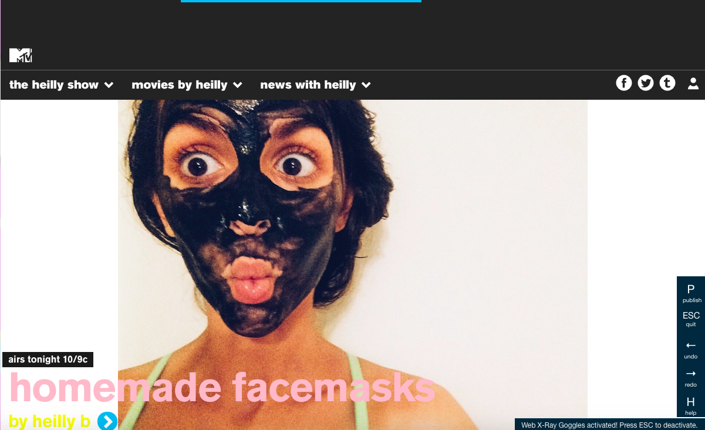
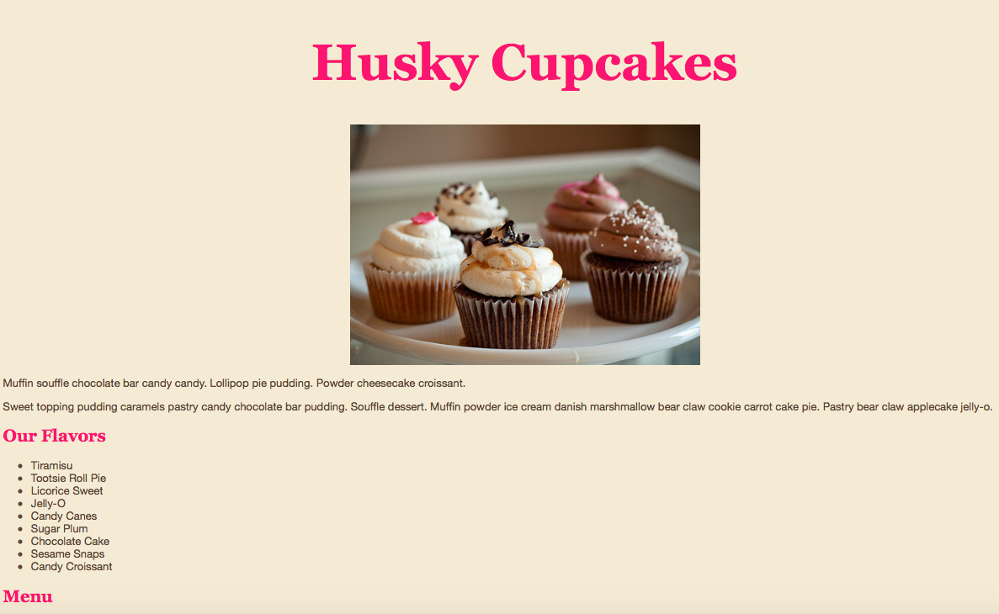

1 / 5

january 2016: before I learned anything about HTML and CSS, I learned about the concept of forking and open source webpage, and for lack of better word, let's call it remixing a webpage! my web design professor had use Mozilla's X-Ray Goggles to reassemble a webpage to make our own. this is the before
2 / 5

This is the after
3 / 5
spring 2016: I created a few social media elements on photoshop for Maritime Aquarium to attract customers to their newest attraction, "Spirit of The Sound" cruise boat.
5 / 5

february 2016: this was my very first web page, i'm proud to say I've grown alot in the programming world (HTML + CSS have been tackled, next up is Javascript!)
5 / 5
summer 2015: my mom is a hairdresser and always needs help promoting her business, this is the most recent project i designed + created for her.
❮
❯